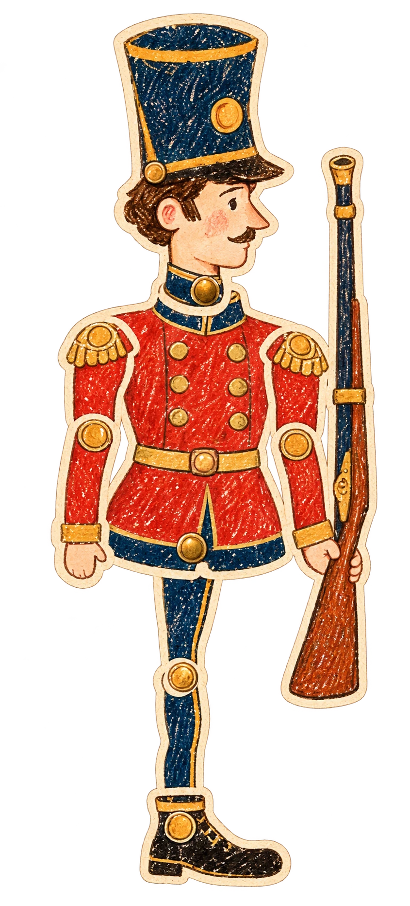
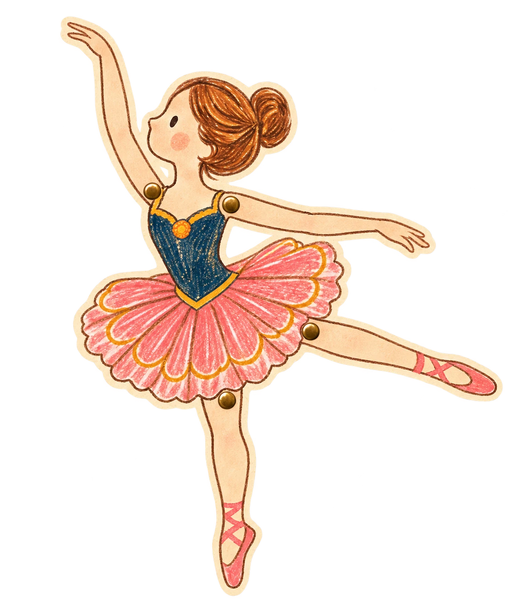
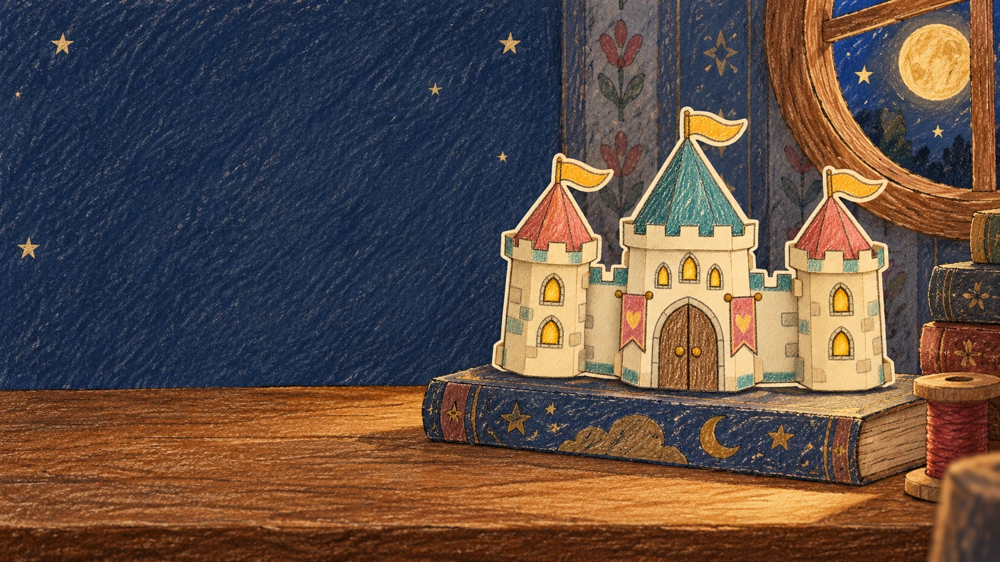
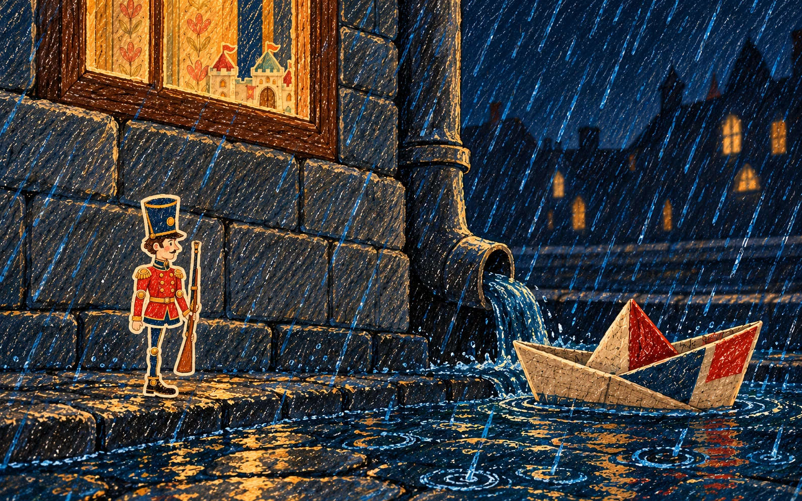
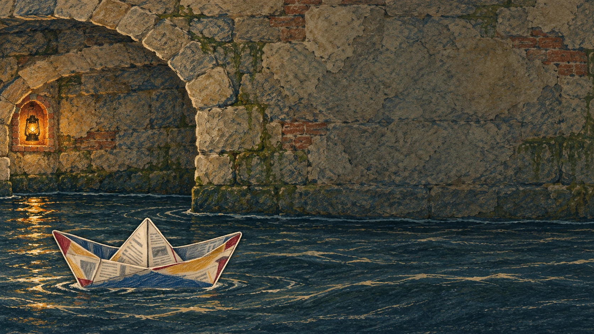
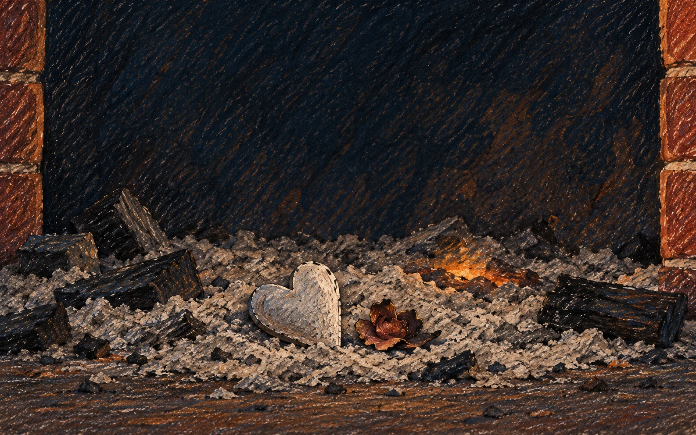

坚定的锡兵
二十五个锡兵，出自同一把旧锡匙。最后一个只铸成了一条腿，却和兄弟们一样，站得笔直。
安徒生原著故事 · 以下为简述，含原著结局


城堡前的舞女
桌上有一座纸城堡。城堡前，纸舞女抬起一条腿。锡兵看不见那条高举的腿，以为她也和自己一样。
夜里玩具们都热闹起来，只有他们静静站着。烟盒里的小妖精，却不许锡兵望着她。


窗外的世界
第二天，锡兵从窗台跌落。雨停后，两个孩子把他放进一只报纸船。小船载着他，漂进了黑暗的水沟。
纸船与大鱼
水鼠追来索要通行证，急流却把纸船冲得更远。纸浸透了，船沉下去；锡兵刚落入水中，便被一条大鱼吞进肚里。
鱼被捕起，送进厨房。厨娘剖开鱼腹，锡兵竟又回到了原来的房间。

她仍在那里
城堡还在，舞女也还在那里。他们彼此望着，没有说一句话。
一个孩子忽然把锡兵扔进炉火。随后，门开了，一阵风将纸舞女也送进火中。

灰烬里的一颗心
第二天，人们在炉灰里找到一颗小小的锡心。舞女只剩下那枚装饰片，已经烧得乌黑。
在《锡心》里
我们沿着这篇童话，把桌上的相遇、雨中的远行与无声的思念，做成了一段可以亲自走过的旅程。
故事原作：Hans Christian Andersen《坚定的锡兵》。
本页为重新撰写的简述，插画为《锡心》概念创作，并非原版插图。
阅读原著英文版 · Project Gutenberg